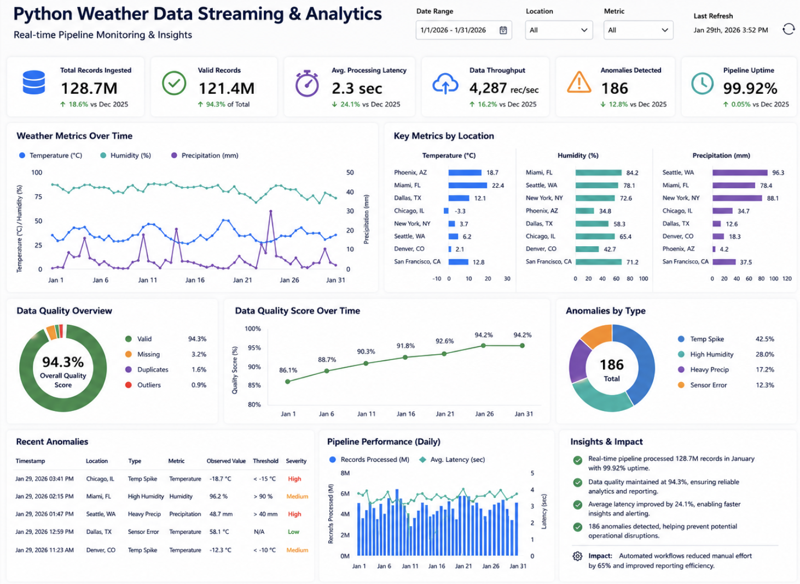
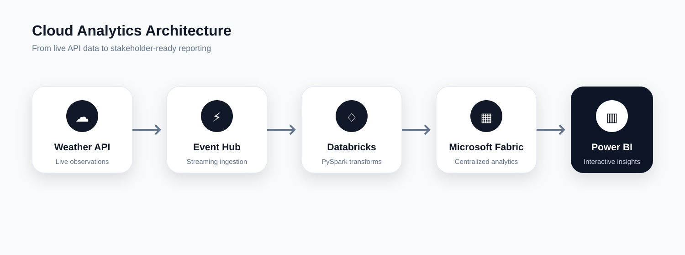

Cloud Data Pipeline · Power BI
Real-Time Weather Analytics
Built an end-to-end Python and Azure analytics pipeline that turns live weather observations into a structured, interactive reporting experience.
Business question
How can changing conditions across locations be monitored without repetitive manual data collection and reporting?
Solution
Automated ingestion, transformation, storage, and visualization using Azure Event Hub, Databricks, Microsoft Fabric, and Power BI.
Value created
Enabled timely KPI monitoring, trend analysis, city comparisons, anomaly visibility, and a reusable cloud workflow.
